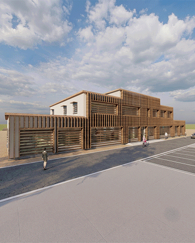
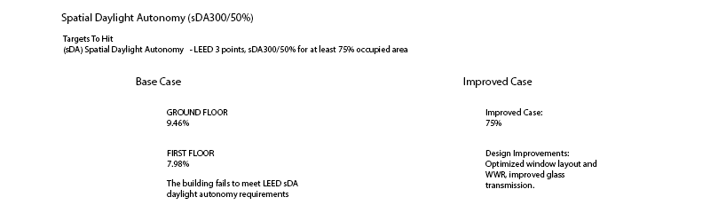
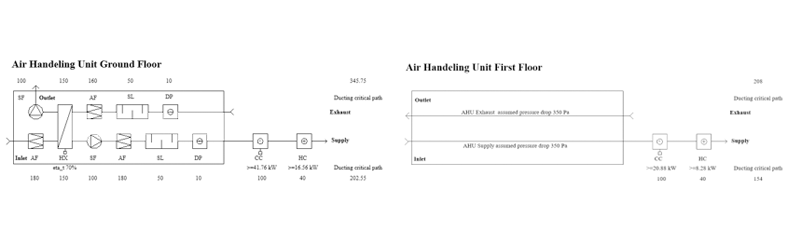

GREEN INNOVATION PARK RENOVATION
The Green Innovation Park building on the SLU campus in Alnarp didn't meet current daylight or energy standards, and it felt claustrophobic to work in. The brief was to fix all three at once, as one integrated design, not three separate fixes. Using Rhino, Grasshopper, ClimateStudio, Ladybug, Revit and Dialux, the existing two-story office was analysed in depth — daylight performance, energy consumption, thermal comfort and ventilation — before a single renovation strategy was proposed to address all of them together.
The renovation reworks insulation on previously uninsulated components, retrofits every window on the building, and adds passive and active exterior shading to cut glare without trading it for overheating. The ground floor was also reorganised into a single-level, open-plan layout to remove the fragmented feel of the original design.

DESIGN APPROACH
The design approach starts from an open, barrier-free floor plan and works outward: disability-friendly circulation, an ergonomic office environment, daylight-maximising windows, overhang/louvre/sidefin shading, and recycled building materials. A dedicated view-out analysis, run against EN 17037, confirmed a "high view out" rating on both floors — occupants get an uninterrupted view of sky, landscape and ground from their desks, not just a window nearby.
The ground floor was reconfigured into a single-level, open-plan layout — two large office zones (190 m² north, 234 m² south) plus a 119 m² collaboration area — replacing a layout that had no communal or social space at all. Relocating the staircase opened up sightlines across the floor, while the basement was kept as dedicated storage, reusing underused space rather than repurposing it into something it wasn't suited for.
DAYLIGHT PERFORMANCE

Post-renovation, spatial daylight autonomy (sDA300/50%) reached 75% — right at the LEED v4.1 threshold — with a daylight factor median of 4.7% and 93% of the floor area at or above the BREEAM 0.7% minimum (just short of the 95% target). Glare stayed well controlled: only 4.3% of the area exceeded the acceptable DGP limit, against a 5% ceiling under EN 17037. Direct sunlight exposure landed at 2.39 h/day on the ground floor and 2.31 h/day on the first, both comfortably above the 1.5 h/day Stockholm reference.
ENERGY PERFORMANCE
The renovation cut primary energy demand (EPpet) from 189.25 to 44.65 kWh/m²/year — a 76% reduction — landing at 53.45 kWh/m²/year once AHU fan power is included, still well inside the BBR near-zero range. Adding insulation alone dropped heating energy use from 137.73 to 34.95 kWh/m²/year, and brought the building's mean envelope U-value down from 1.5 to 0.411 W/m²K, a result strong enough that BBR's specific-component U-value rules no longer even apply.
Heating dominates the annual energy picture by a wide margin over cooling and hot water, as expected for this climate. Peak heating load fell from 0.056 to 0.01 kWh/m² between the base and improved case, while peak cooling ticked up slightly (0.005 to 0.009 kWh/m²) — an acceptable trade-off given how much greenery already shades the building.
VENTILATION & HVAC

Both existing AHUs were kept and reused rather than replaced — one per floor, each with enough spare capacity to cover the renovated building's lower airflow needs (the ground floor unit alone had roughly 21.5% headroom over what the new design requires). The ground floor's undersized heating coil was relocated to the first-floor unit, which had enough spare capacity to take it, while new cooling coils were added to both AHUs. Specific fan power came out at 1.175 kW/(m³/s) for the ground floor and 0.84 kW/(m³/s) for the first floor.
Reusing components was a design goal, not an afterthought: roughly 78% of the existing ductwork by length and 60% of air terminals were kept in the renovated design, each figure discounted 20% up front to account for scrap and installation losses. New supply terminals were chosen specifically for quiet operation (under 20 dB) to suit the open-plan office layout.
HEATING SYSTEM
ELECTRIC LIGHTING
Electric lighting was simulated in Dialux Evo against EN 15193, giving a room-by-room illuminance picture that complements the daylight simulation — the goal being a lighting design that only switches on where and when daylight genuinely falls short, rather than lighting every room to a flat, energy-hungry default.
TAKEAWAYS
- Holistic design yields cross-system dividends. Treating daylighting, energy, and ventilation as a single integrated discipline allowed structural open-plan reorganizations to resolve spatial, thermal, and daylighting bottlenecks concurrently[cite: 7].
- Fabric-first measures drive bulk efficiency. Adding targeted envelope insulation slashed primary energy demand by 76% (189.25 to 44.65 kWh/m²/year) before active mechanical adjustments were made[cite: 7].
- HVAC retention maximizes circular sustainability. Retaining 78% of existing ductwork and both primary air handling units significantly lowered embodied intervention costs and material waste[cite: 7].
- Deliberate shading decouples daylight from glare. Optimized louvers and overhangs maintained daylight autonomy at the 75% LEED benchmark while keeping glare probability comfortably beneath the 5% standard ceiling[cite: 7].
- Transparent reporting identifies benchmark gaps. Acknowledging tight benchmark variations (such as reaching 93% floor area coverage against the 95% BREEAM target) ensures realistic post-occupancy performance expectations[cite: 7].